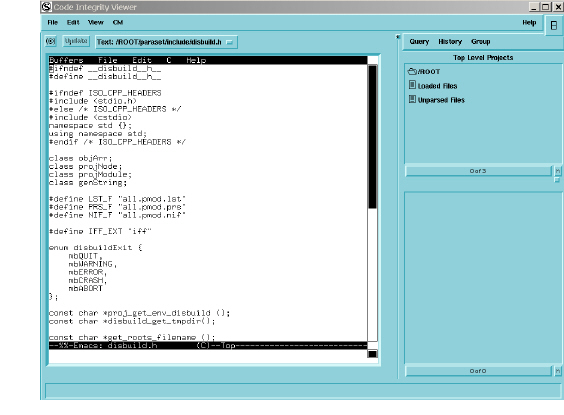
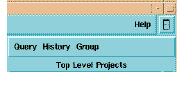
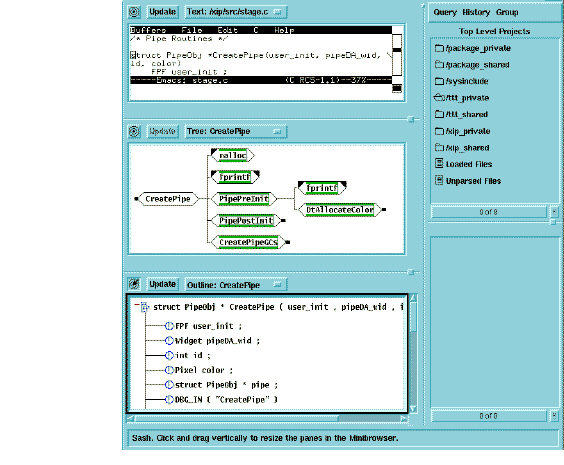

The Viewer
The Viewer is a separate window that provides text and graphical views of selected entities and instances. The Viewer appears whenever you select a View from the View menu or double click an entity in the Browser.
The following shows the Viewer after double-clicking an entity in the Browser’s Results pane.

The left side of the Viewer contains an Emacs session that displays a text view of the entity you selected in the Browser.
The right side of the Viewer contains the Minibrowser (The Minibrowser). You can enable and disable the Minibrowser by clicking the rectangular icon to the right of the Help menu.

The Viewer displays the source code for your selection. By default, source text opens with an Emacs. The viewer window contains its own menu options that allow you to manipulate how you view this data and search the text of your source.
The main viewing area is to the left (in this case, a text view focused on the function CreatePipe). Along the bottom of the Viewer window is the minibuffer, which displays descriptions of either the currently selected entity, or the cursor focus. At the right side of the Viewer window is the Minibrowser, which provides a subset of Browser functionality.
Once you pull content in from the Browser, you can use the Viewer’s menu options to further manage the display.
You can divide Viewer into as many as three independent views, each of which can display one of the view formats listed previously. To do so, select View > Split Viewer from the menu. The following shows text, call tree, and outline views of CreatePipe.
To reduce the number of views in the Viewer, select View > Remove Viewer. This closes the view closest to the bottom of the Viewer.
